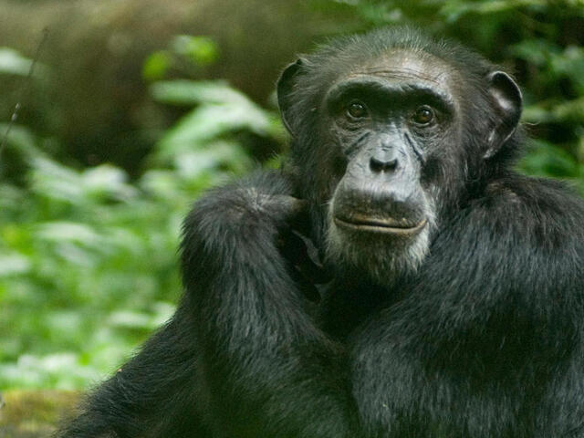
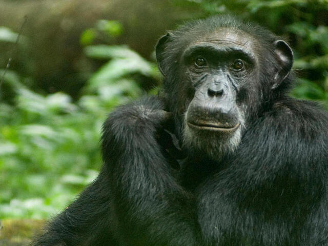

A mammal is an animal that breathes air, has a backbone, and grows hair at some point during its life. In addition, all female mammals have glands that can produce milk. Mammals are among the most intelligent of all living creatures.
Mammals are distinguished from other vertebrate animals by several unique features. All mammals produce and secrete milk from mammary glands to feed their offspring. They also have hair on their bodies, although some mammalian groups have less hair than others. Hair or fur helps mammals survive in cold climates by insulating their bodies. Examples of mammals include rats, cats, dogs, deer, monkeys, apes, bats, whales, dolphins, and humans.
Aquatic animals are those that live in or around water. Freshwater animals are aquatic organisms that populate ponds, rivers, and lakes. Marine or saltwater animals are aquatic species that inhabit oceans. Aquatic animals include both vertebrates and invertebrates.
Aquatic animals include fish, lobsters, dolphins, jellyfish, sharks, sea turtles, starfish , crabs, octopus, whales, seahorses, squid, swordfish, shrimp, killer whales, manta rays, otters, and oysters.

Terrestrial animals are animals that live mainly or entirely on land (e.g. cats, dogs, ants, spiders) compared to aquatic animals that live mainly or entirely in water (fish, lobsters, octopuses, etc.) and amphibians. is a combination of aquatic and terrestrial habitats (such as frogs and newts).
Insects include terrestrial insects such as ants, butterflies, earwigs, cockroaches and grasshoppers, but also partially aquatic insects such as mosquitoes and dragonflies that spend their larval stage in water. Terrestrial animals tend to be more developed and intelligent than aquatic animals.


Amphibians are vertebrates (animals with backbones) which are able, when adult, to live both in water and on land. Unlike fish, they can breathe atmospheric oxygen through lungs, and they differ from reptiles in that they have soft, moist, usually scale-less skin, and have to breed in water. Reptiles, such as lizards and turtles, always lay their eggs on land.
The official class of amphibians is Amphibia. Amphibians are vertebrates that require water to survive, are cold-blooded, and spend time both on land and in water. Though other animals only live on land or in the water, amphibians have the unique ability to thrive equally in both. Amphibians cover over 6,000 different species across the globe, but about 90% are frogs. other Examples includes toads, newts, slamanders etc.

The largest living land animals are the elephants. They are noted for their long trunk, which is an elongated upper lip and nose. They have columnlike legs and a huge head with wide , flat ears. Mammals of Africa and Asia, elephants live in habitats ranging from thick rainforests to savannas. The great size of elephants and the thickness and toughness of their skins protect them from most other animals. Since they have few enemies to fear, elephants are usually peaceful and easygoing. They show great affection for one another, and females spend their lives as members of a family herd.
Elephants are highly social. Females and young male elephants live in small family herds. The typical herd contains 20 to 40 females (cows) of all ages. The leader is usually a mature cow. She is most likely to maintain an even temper. Males remain with the cows until they reach puberty, at about 12 to 15 years of age. Where food is plentiful, groups of elephants may join together.
Reptiles are cold blooded animals. They regulate their body temperature by adapting to the outside temperatures. To keep them warm they stay in the sun and to keep them cold they stay in the water or hide under the ground or rock. Reptiles are air breathing animals and give birth to the young one by laying eggs. Usually reptiles breathe through lungs but sometimes they can suck up oxygen in the water through the membranes present in the mouth.
Examples of reptiles include crocodiles, snakes, lizards and turtles etc.

The Latin terminology for viviparous is also known as ‘Viviparus.’ This means, ‘life-bearing’ or ‘to bring forth alive.’ Animals who can give birth to the younger ones are called viviparous animals. In the case of viviparous animals, since they do not hatch eggs, embryonic development takes place inside the mother’s body, i.e., the female reproductive system. Once the fetus is fully developed, the baby is delivered from the mother’s body.
Examples: Marine animals such as whales, dolphins, dogs, cats, and human beings. Most of the mammals fall under this type.


A primate is any mammal of the group that includes lemurs, lorises, tarsiers, monkeys, apes, and humans. The order Primates, with its 300 or more species, is the third most diverse order of mammals, after rodents and bats. This is a list of selected primates ordered alphabetically by taxonomic group.
The primate definition offers insight into the history of the term. The word "primate" was formed by its root word, "prime," meaning "first." The word was Latinized by Carl Linnaeus, the father of taxonomy, to "primate" meaning "first order." This name was applied to monkeys, apes, and humans because Linnaeus believed them to be of the highest, most superior group of animals. Examples includes Humans, Gorillas, Chimpanzee etc.
 

Birds are vertebrate animals adapted for flight. Many can also run, jump, swim, and dive. Some, like penguins, have lost the ability to fly but retained their wings. Birds are found worldwide and in all habitats. The largest is the nine-foot-tall ostrich. The smallest is the two-inch-long bee hummingbird. Everything about the anatomy of a bird reflects its ability to fly. The wings, for example, are shaped to create lift. The leading edge is thicker than the back edge, and they are covered in feathers that narrow to a point. Airplane wings are modeled after bird wings.
Birds have a unique digestive system that allows them to eat when they can—usually on the fly—and digest later. Examples includes Ostrich, Eagle, Hawk etc.

Any of various large nonvenomous snakes that kill their prey by crushing it in its coils. Examples includes Python, Anacondas etc.

We are a non-profit organization with the sole aim of protecting endagered species all over Africa and across the world. Your donations finacially is what keeps us functioning, to know more on making donations "click on the Contact Us" link at the top bar of this page. Hope to hear form you soon!.